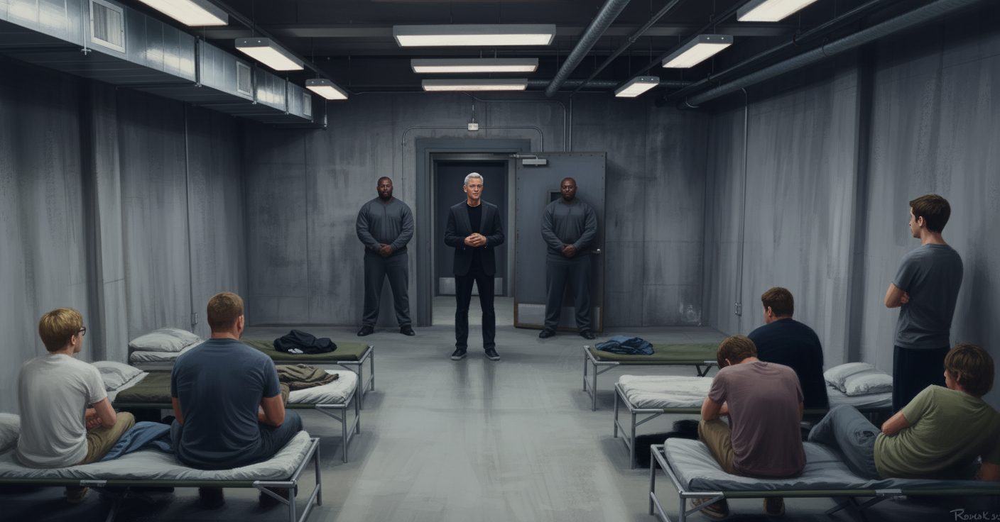

The cold came first.
Not a conscious thought, just the cold, pressing up through whatever Charlie was lying on, which was narrow and hard and had a thin give to it that was not the give of his dorm room mattress. He only knew the cold.
Then light. His eyelids registered it before he was ready, too white and too sourceless, not the gray-morning quality of his dorm window. His eyelids stayed closed a moment longer, the way you held your eyes shut when you already knew something you didn't want to be true.
He opened his eyes to a room he didn’t go to sleep in. A concrete ceiling. Ductwork crossing it, fluorescent panels throwing flat light that made the air look slightly wrong. He blinked. It was still there.
Charlie turned his head slowly, his neck stiff, and tried to get his bearings. Shapes in cots like the one he was on. Four. No, five. Six including him.
An arm slung over a face. Someone not quite still, shifting, not quite ready to be awake. A hand coming up and pressing against someone's eyes. He knew these people. He was almost sure he knew these people. He didn't know from where.
He sat up. The room tilted before it settled. Charlie’s mouth tasted like copper and underneath the copper something else, something that wasn't thirst but a roughness, chemical and wrong. His eyes felt scraped. His arms had taken a half-second longer than usual to remember what to do with themselves.
"Is anyone else's mouth completely dry," said the one with his arm over his face, without moving.
From around the room came a few sounds that added up to yes.
"My whole body feels like I slept on concrete."
"You did sleep on concrete." A voice to his right; he heard the pat of a hand on thin padding. "More or less."
Charlie got his feet on the floor. He sat there. Concrete walls, close on either side, seamed and institutional. Ceiling too high for the floor space, the ductwork he'd already seen. A door at the far end, heavy and metal, no handle on this side. No windows. He checked. He checked again.
Six water bottles on the floor. One for each cot.
"Where are we," said a voice across the row. No one had an answer.
He looked at the others and let the context find him. Five guys, all at various stages of the same slow return. He knew the faces. He sat with the knowledge of knowing them while the reason floated just past his reach, and then it arrived the way these things did: not the full memory, just a place. A table. A study room on the third floor of Hartwell's humanities building.
Psych project.
Professor Aldrin's class.
He couldn't make that into a reason. He couldn't make it into anything. He sat with it anyway.
He'd met them twice. Two Wednesday afternoons, six people arranged around a table with their laptops open, doing the minimum required to distribute the work and get out. He'd learned their first names and forgotten them by finals. He knew their faces the way you knew the faces of people you'd stood in an elevator with, just enough to nod at across a dining hall, not enough to say anything.
"Group project," Charlie said.
They looked at him.
"We're all in the same group project. From Professor Aldrin's class." He looked around at each of them. "Right?"
A few slow nods.
"I'm Charlie," he said. "Charlie Wright."
A beat. Then, reluctantly, the others.
The one with the arm over his face sat up. He was tall and loose-limbed, still carrying the length of a recent growth spurt, dark blond hair going in several directions at once. He surveyed the room without visible alarm. "Everyone calls me Toad."
"Austin." The stocky one said it without turning his head. He'd settled into a corner where the door and the room were both visible and hadn't moved from it, arms crossed, watching. Not panicking. Something more deliberate than that.
"I'm Pete—" started the pale one with glasses.
"Jay." Already on his feet, rolling his neck. He was big in a different way than Austin. Not an athlete's build but the soft bulk of someone who ate well and never worried about it, conventionally good-looking in a way he was clearly aware of, dark-haired, the kind of guy who walked into a room already assuming it would go fine.
“I’m—” glasses tried again.
“I guess that leaves me,” said Hal, who had been waiting with visible impatience. Dark-haired, angular, the look of a person who found most things slightly beneath him. "I’m Hal," he said. He looked around at each of them. "So we're all from Aldrin's class."
“Peter,” came the thin voice for a third time. Slight, sandy-haired, glasses a little thick for the face. He'd been sitting with his back against the wall and his knees up since Charlie had woken, watching the door.
"So this is about the project?" Jay said.
"It can't be about the project," Hal replied dismissively. He was already on his feet, moving. He went to the door first, hit it twice with the flat of his hand, tried the frame, looked for give that wasn't there. Then several circuits of the room, fast, needing the motion. "No windows. Vents are useless. Door opens outward." He turned back to the room. "There’s nothing. Someone knew what they were doing."
"So we wait," Toad said, from his cot. He'd found his water bottle and was lazily drinking from it with the unhurried patience of a man waiting for a delayed flight. "Someone'll come."
"That's your contribution?"
"I mean." Toad considered. "What else are we doing."
"I was in my dorm room," Austin said, to no one in particular. He was in the corner where he could watch the door, arms crossed. "In my bed. Someone must've come into my room."
"Same," Jay said. "Didn't hear anything. Asleep and then here."
"They gassed us," Peter said. He'd been sitting very still on his cot, watching. "Something odorless and fast-acting. The dry mouth and the metallic taste are consistent with that."
"Great," Hal said. "Thank you, Peter."
"I'm just--"
"So we were all taken from our dorms," Charlie said. "At the same time, probably. Someone planned this.”
That landed. Even Toad stopped drinking.
"Why us," Jay said. "What do we have in common."
"The project," Charlie repeated, because that was the only answer. He didn't believe it either. But it was the only thing any of them had formally shared, and it felt absurd even as he reached for it. A psych project turned in last November, a B-plus, finished and forgotten.
"A psych project. Nobody kidnaps six people over a psych project."
"Nobody kidnaps six people at all," Peter said. "Statistically."
"Thanks, Peter."
"Maybe this is a psych experiment? Professor Aldrin picked us as subjects for some reason," Charlie suggested.
“Without our consent? No way,” replied Hal.
"So either it's a mistake," Jay said, "or there's something else. Something we're not seeing." He looked around the room. "Does anyone have any — I don't know — enemies? Anything? Because I've got nothing."
"Mistaken identity," Toad offered, without much conviction.
"All six of us?"
"Never mind."
Charlie looked at each face in turn. He knew almost nothing about any of them. Toad had shown up to both meetings slightly late and contributed exactly as much as was required. Hal had been intense about the outline in a way that had irritated everyone and then right about it, which had irritated everyone more. Austin had been quiet, competent, disinterested. Jay had done his section the night before and it had been fine. Peter had done more than his share and said nothing about it.
None of it pointed to anything.
"Maybe it's not about Aldrin's class," Charlie said. "Maybe we're just — I don't know. Maybe it’s just a coincidence.”
"One hell of a coincidence. This is insane," Jay said. He looked around the room. "Is anyone else genuinely freaking out or is it just me."
"I'm freaking out internally," Toad said, pleasantly.
"Good to know."
Austin hadn't moved from his corner. "Someone will come in eventually," he said. "When they do, we pay attention. We don't say anything we don't have to. We find out what they want."
"And then what," Hal said.
Austin looked at him. "And then we figure out the next thing."
Hal didn't have a response to that. Nobody did. Charlie sat on his cot and turned it over in his mind — the project, the class, what else they had in common — and kept not landing on anything that made sense.
They waited. The ventilation hummed at a frequency that became, after a while, indistinguishable from silence. Hal did another circuit of the room, found the same things he'd found the first time, and sat down. Jay finished his water bottle and turned it over in his hands. Peter sat with his back against the wall and his knees up, watching the door. Austin stayed in his corner. Toad had, at some point, lain back down, not asleep, just horizontal, one arm over his eyes.
Charlie had no way to measure how long it had been. An hour, maybe. Maybe less. The flat fluorescent light didn't change and there were no windows and no clock. At some point the adrenaline had finished doing whatever adrenaline did and left behind something flatter and harder to name, a compound of dread and boredom that he hadn't known could coexist until now.
A lock disengaged somewhere in the door's mechanism. No footsteps before it, no sound of approach. Every head came up as the door opened.
Two guards came first, taking positions on either side. Then a third.
Charlie knew the face before he placed it. Something about the stillness of the man — the complete absence of anything provisional or defensive in how he moved — pulled at a context he couldn't quite locate. Someone he’d seen on TV, maybe. Something watched briefly and forgotten. He was still reaching for it when the man spoke.
"My name is Harlan Cade. You are all my guests."
{kind=link}

Charlie looked at him and felt himself go very still. The subcommittee. The measured voice explaining the research value of primate testing to people who didn't want it explained that way. He knew exactly who this was. What it meant he couldn't yet say.
"What do you want," Jay said.
"I want to explain your situation." Cade looked around the room with the unhurried attention of a man taking stock of something already his.
"My company, Cade Biotech, has a leading medical research program. Compounds, treatments, therapies at various stages of development. Until recently, that research made use of primate subjects." He paused, not for effect, more the pause of a man who has arrived at the next sentence and sees no reason to rush it. "That's no longer viable. We had to find an alternative."
"What does that have to do with us?" Peter asked.
"If we can’t test on lower primates, we will test on humans. But human trials require volunteers." He said it with no particular inflection. "The six of you have volunteered."
"We haven’t volunteered for shit," Hal said.
"That’s where you’re wrong."
The room was quiet for a moment. Jay said: "What does that mean."
"It means you'll be participating in a research program under the direction of my director of novel therapy development, Doctor Vane.” Cade gestured toward the empty doorway.
Every eye in the room went to the door. Nothing happened.
Cade frowned, the look of a man accustomed to the world running on his schedule. “Crispin, that’s your cue.”
A thin man stepped from the corridor, tablet in his hands, thumb moving across the screen as he walked. Mid-forties, pale, dark hair going grey at the temples, the unremarkable face of someone you would struggle to describe afterward. He looked up from the tablet and surveyed the room. Where Cade had surveyed them like a man taking inventory, Vane moved from face to face with the attention of a contractor determining where to begin a renovation project. He reached Charlie last and held there a half-second longer than the others, and something in his expression opened slightly — just barely, and just around the eyes — and Charlie felt, without being able to say why, that he had already lost something.
"I am Crispin Vane. You will be housed, fed, and monitored. At the conclusion of the program, you'll be—"
Cade raised a palm toward Vane, but kept his eyes locked solidly on Charlie. "Not yet."
Vane's voice died. He stood there a moment, glancing between the back of Cade's head and the captive boys, his mouth still open before he remembered to close it. He fixed his eyes on his tablet, lips pressed together, jaw set.
"You can't do this," Jay said. His voice pitched up. "We're not animals. You can't just — this is kidnapping. This is a federal crime. You understand that? You’ll go to prison—"
"My parents will report me missing," Peter said, cutting through in a different register. "All of our parents will. People will look for us. Six students don’t just disappear—"
"You'd be surprised," Cade said, pleasantly.
"I want a lawyer," Hal said.
"I'm sure you do."
"I want a phone call. You have to give us—"
“I don’t have to do anything.”
"Listen." Charlie heard his own voice come out steadier than he felt. "Whatever the research is — whatever you're trying to do — there are actual volunteers for this kind of thing. People who sign up. We can help you find them. We don't have to be here."
Cade looked at him for a moment. "Oh, but you do have to be here. I already have exactly who I want."
The room fell briefly quiet. Vane shuffled his feet impatiently but said nothing.
"What—" Charlie said. "Why us?"
"My daughter Wren is a student at Hartwell with you." A brief pause. "Well, not with you any longer. You six, of course, are no longer enrolled."
Wren Cade.
The name sat in Charlie’s mind for a brief moment before connecting to a memory. The coffee shop. The girl at the next table. Her eyes going bright and then wet. The Discord thread running on his screen, Hal's messages stacking, and Charlie watching her and feeling guilty and doing nothing about it. Somehow Cade had found out.
This was revenge.
“Unenrolled?” sputtered Peter. “You can’t just—”
"You think you're the only one with money?” Jay interrupted. “My dad will—"
“I want a lawyer!” Hal said again, louder than all of them.
"I heard you the first time." Cade turned toward the door.
"We'll apologize."
The noise in the room stopped. Every head turned to look at Charlie, who looked as surprised as any of them. He wasn’t even sure he’d meant to say the words out loud. They kept coming.
“To Wren. We’ll apologize. I'll do it myself, tonight, however she wants it — tell her exactly what we said, let her decide what she needs—"
Cade looked at him.
"My daughter doesn't know you're here." His voice hadn't changed. "She would hate this. She will never know."
The room was very still.
"This isn't about Wren." He turned toward the door. "Dr. Vane will take it from here."
Vane stepped forward, swiping at the screen of his tablet. "First, we will collect baseline readings. In a week, we should be ready to— "
"Today, Crispin," Cade interrupted, already halfway out of the room. "We begin today."
Vane looked up from his tablet at Cade's back. His mouth started to form words, but no sound escaped. He looked back down at his tablet.
"Today," he echoed.
Toad, who had said almost nothing, spoke from his cot. "Are you going to hurt us?"
Cade paused in the door without turning back. A beat that was not quite a hesitation.
"Not in the way you mean."
He left. The door closed behind him with a soft, heavy certainty and the lock engaged.
Vane looked at each of them in turn, unhurried, the tablet held at his side. And then, briefly, he smiled. It didn't reach his eyes and it wasn't meant for any one of them specifically. It was the smile of a man who has been waiting a long time to begin something.
Charlie looked back at him and understood that this was going to be worse than anything Cade's presence had implied. Cade was legible, a man with a grievance and the resources to act on it, monstrous in a way that at least had a human shape. The smile Vane had just shown the room had a different quality entirely. Not a man with a project. Something more like hunger.
Vane glanced down at his tablet. Back up.
"Very well," he said. "Let's get started."